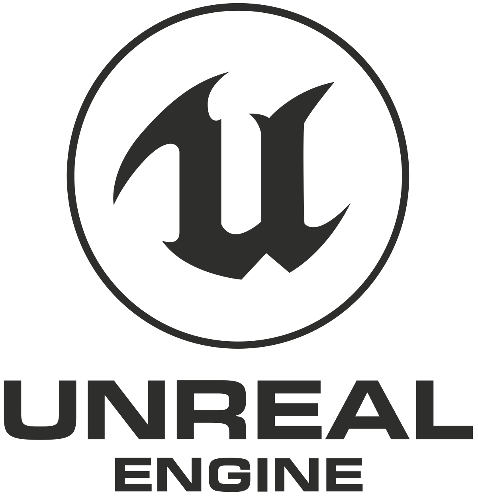
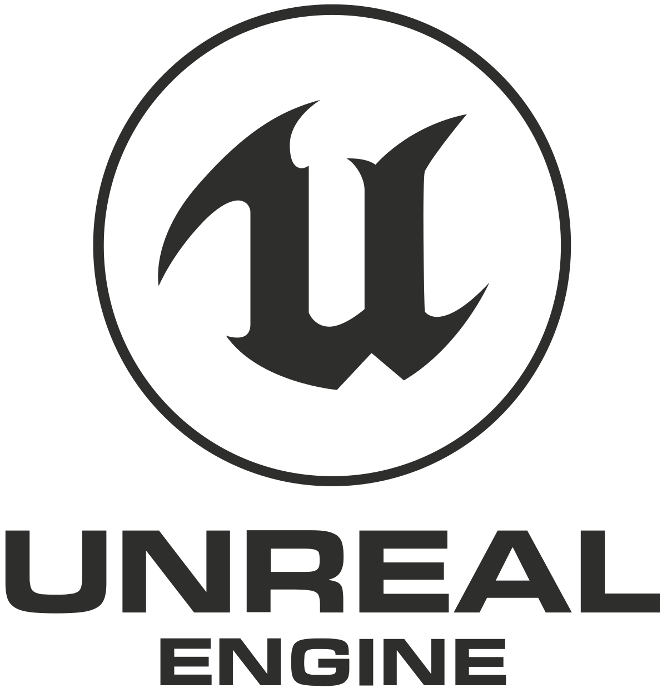
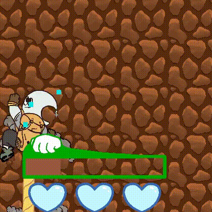
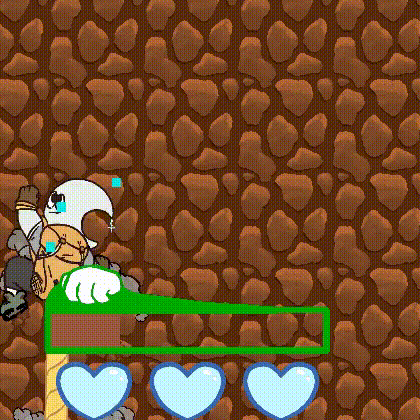

Michael Freaney
Hello! My name is Michael Freaney, and I am currently a senior Computer Science student at Texas A&M University, minoring in Game Design and Development. I was born in Manchester, England, and grew up in Houston, Texas, where I currently live. I enjoy music, cooking, and working out in my free time.
I have always held a deep interest in the world of game development, having been around video games since I was a kid, and so I am currently pursuing a career in game programming to make a fulfilling career out of that hobby. By joining Texas Aggie Game Developers (an on-campus chapter of the International Game Developers Association), I've found a chance to explore this interest and get involved with a close-knit community of other game developers, while creating my own projects to hone my problem solving skills (you can find these under "Portfolio"). Opportunities to improve myself, such as working with NetEdgeVR as an intern on training software in virtual reality, have allowed me to step outside of my comfort zone and learn new skills around other hardworking developers. I have also worked with the Texas A&M LIVE Lab as a programmer, where I work with Production, Concept, Design, and Art teams to create research-based educational games.
Below are links to my Linkedin and Github pages, where you can find my work. You can also check out an overview of some of my projects in the navigation bar.


 



 A first person stealth/puzzle shooter in which the walls around you must be shot to be rendered visible; however, your gun is loud, and will alert enemies in the area.
A first person stealth/puzzle shooter in which the walls around you must be shot to be rendered visible; however, your gun is loud, and will alert enemies in the area.


 

 A 2D arcade runner about the sun and moon climbing back to space.
A 2D arcade runner about the sun and moon climbing back to space.
.png)
.png)
.png)
.png) Creating randomly generated dungeon sets with a binary tree.
Creating randomly generated dungeon sets with a binary tree.